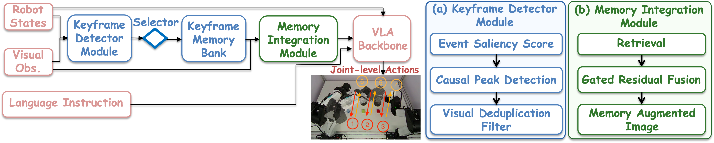

论文信息
| 作者 | Yihan Zeng、Minghao Ye、Yiyuan Chen、Yide Shentu、Philipp Wu、Zike Yan、Zhongyu Li |
|---|---|
| 机构 | Hong Kong Embodied AI Lab、xdof.ai、香港中文大学、电子科技大学、上海交通大学 |
| 任务 | 带有 stage ambiguity 的长程双臂操作：当前画面相似，但因已完成的历史操作不同而应执行不同动作。 |
| 一句话 | 用机器人运动学减速提出关键帧候选、用视觉差异确认真实状态转移，再把少量有序关键帧作为历史证据注入 VLA。 |
1. 核心摘要
长程机器人操作的难点不只是动作时长，而是 stage ambiguity：当前桌面画面可能相似，正确的下一步却取决于此前是否已经覆盖、移走、放置或替换过某个物体。保存全部视频会使视觉上下文持续膨胀；只保留最近帧则容易忘掉早期关键关系。KEMO 将历史压缩为由机器人自身交互产生的事件关键帧，而不是按固定间隔或仅按最近性取帧。
它的核心链路是 kinematic candidate → causal peak → visual confirmation → ordered memory fusion。关节运动减速构成廉价、因果的候选信号；冻结的 DINOv2 再排除视觉上与已有关键帧重复的停顿。保留帧经与 π0.5 相同的 SigLIP 视觉编码器压成 token，利用带 padding mask 的 cross-attention 和门控残差融合到当前视觉表示。六个真实双臂任务、每任务 12 次试验上，论文报告聚合任务成功率 TSR 从无记忆 π0.5 的 27.8% 提升至 51.4%，阶段完成率 SCR 从 42.3% 提升至 76.4%。
2. 研究动机
2.1 相似观测并不意味着相同任务阶段
论文将时刻 t 的输入写为多相机 RGB 图像和本体状态 oₜ={Iₜ,sₜ}，再结合语言指令预测一个 H 步 action chunk。以 Cover Blocks 为例，桌面上仍可看到相同的杯子和积木，但如果前面已覆盖过哪些位置，下一步应操作的目标便不同。只根据当前图像的 Markov policy 无法可靠区分这类阶段。
2.2 稠密历史与短窗口各有盲点
稠密保存所有观测需要持续压缩，容易把少数决定任务进度的细节冲淡；只取固定最近窗口则会遗忘先前看见的物体—位置关系。固定间隔采样也把“时间位置”误当成“任务进度”：推理中一次重试会拉长轨迹，使与训练时同样的采样索引落到不同语义阶段。
2.3 事件而非帧是合适的写入单位
作者的假设是，抓取、放置、覆盖、释放、替换等交互附近的状态转移帧最值得保存。运动学给出低成本且无需在线 VLM 的候选，但停顿不一定产生语义变化；因此必须加视觉确认。这个“motion 提名、appearance 复核”的分工，使关键帧检测成为可因果运行的历史写入门，而不是仅把更多帧塞进上下文。
3. 方法论

原论文 Fig. 2。来源：arXiv LaTeX 源码 assets/overview.png（非 PDF 裁图）。左侧 Keyframe Detector 从机器人状态与视觉观测选择事件帧，中间写入 Keyframe Memory Bank，右侧以 Memory Integration Module 注入 VLA。
3.1 记忆条件策略：保存“已发生的状态转移”
KEMO 不改变 VLA 输出 action chunk 的基本形式，而让策略条件化于历史记忆：πθ(aₜ:ₜ₊H | oₜ, ℓ, Mₜ)。其中 Mₜ 不是完整轨迹，而是截至 t 已检测到的一组按时间排序的事件关键帧。这样，记忆为当前预测提供“哪些阶段已经完成、之前看到过何种对象关系”的证据，而不是作为当前观察的替代品。
3.2 事件关键帧检测：先找候选，再消除假阳性

原论文 Fig. 3(a)。来源：arXiv LaTeX 源码 assets/keyframe_detection.png。图中保留的关键帧、普通帧与被视觉过滤的候选帧，说明运动峰值本身并不等于可写入事件。
运动学显著性。 设 qₜ 为关节位置，作者先在长度为 w 的滑窗内计算平均关节位移 δ̄ₜ=(1/w)Σ||qₜ₋ᵢ−qₜ₋ᵢ₋₁||₂，再取 Sₜ=1/(1+δ̄ₜ)。因此机器人在精细抓放、释放或阶段切换前减速时，Sₜ 升高。该分数只依赖当前及过去状态；局部峰在一个短确认窗口后被确认，故有因果运行属性，但并非零检测延迟。
视觉去重。 候选时刻 cᵢ 会与最近一次接受的关键帧 kᵢ₋₁ 比较。冻结 DINOv2 的全局图像 embedding 给出视觉差异 vᵢ=1−cos(φ(Icᵢ),φ(Ikᵢ₋₁))；仅当 vᵢ>ε 才接受候选。最后再设置最小 refractory period r，抑制同一次持续转移中反复写入。这里明确区分：运动减速负责召回候选，视觉差异负责抑制无状态变化的暂停或微调。
3.3 Keyframe Memory Bank：空间压缩与时间顺序
每个被接受的关键帧先经 π0.5 同源的 SigLIP 视觉编码器产生 256×D patch tokens；然后使用 4×4 spatial average pooling，把每帧压为 16×D token。时刻 t 的记忆保留至多 K 个最近接受帧；不足 K 时用最近帧填充，但以二值 mask 遮蔽填充槽。每一槽再加可学习的 temporal position embedding，告诉模型这对应第几个已完成阶段，而不仅是视觉上相似的旧画面。
3.4 记忆注入：以当前视觉为 query 的门控 cross-attention

原论文 Fig. 3(b)。来源：arXiv LaTeX 源码 assets/keyframe_memory.png。存储关键帧经编码、空间池化和时间位置编码后，作为历史 K/V 与当前视觉 query 融合。
当前帧 patch tokens Xₜ 作为 query，K 个关键帧的池化 token 拼接为 key/value，形成 X′ₜ=CrossAttn(Xₜ,KV,mask)。输出不被直接替换当前视觉，而是经门控残差融合：X̂ₜ=Xₜ+σ(g([Xₜ;X′ₜ]))·X′ₜ。门控的负偏置初始化使训练初期接近关闭，先保留原 π0.5 的感知行为；当历史确实有用时才增大记忆贡献。融合发生在视觉编码阶段，之后送入原 VLA 的语言、状态与动作预测路径，前缀长度和语言模型结构不需要改变。
3.5 Keyframe-consistent training：让写入事件也是重点监督位置
作者复用相同的关键帧索引，同时定义 memory 内容与训练损失权重。关键帧附近半径 δ 内的时刻使用权重 λ>1，其余时刻权重为 1：L=Σₜwₜℓₜ / Σₜwₜ。其中 ℓₜ 是 action horizon 上的 flow-matching velocity loss。其逻辑是：阶段转移处的动作错误最容易传递到后续阶段，因此训练应在将来会写入记忆的时刻格外准确。该设计使“检测到什么、存什么、重点学什么”三者共享同一事件定义。
4. 实验与结果
4.1 设置与指标
实验在真实 YAM 双臂系统的六个 memory-dependent 任务进行：Swap Foods、Find Block、Cover Blocks、Box Refill、Make Sandwich、Drawer Items Replacement。任务有 2–6 个计分阶段，平均 28–95 秒、830–2846 执行步；每项方法、每个任务评估 12 次，训练使用约 100–200 条 demonstration。TSR 要求所有阶段均按正确顺序完成；SCR 只计算从任务开头起连续完成的阶段，因此能反映在首次失败前推进到何处。
4.2 主结果：整体完成与阶段推进同时提升
| 聚合指标（六任务） | π0.5 | MemoryVLA | KEMO | 相对 π0.5 的变化 |
|---|---|---|---|---|
| TSR | 27.8% | 1.4% | 51.4% | +23.6 个百分点 |
| SCR | 42.3% | 未在摘要处汇总 | 76.4% | +34.1 个百分点 |
这组对比既说明 KEMO 更常完成整条任务，也说明其在失败前能连续推进更多子阶段。MemoryVLA 的 TSR 很低表明“加记忆”本身并不充分；选择什么历史、如何融合、以及是否让训练重点覆盖转移时刻都很关键。作者在 Drawer Items Replacement 上仍未获得完整任务成功，提示最难的物体—抽屉对应关系并未被完全解决。
4.3 选择策略消融：事件帧优于均匀与最近帧
| Cover Blocks 选择策略（关闭 loss weighting） | TSR | SCR |
|---|---|---|
| Uniform sampling | 0/12（0.0%） | 1.833/6（30.6%） |
| Recent frames | 1/12（8.3%） | 0.700/6（11.7%） |
| Event keyframes | 3/12（25.0%） | 2.500/6（41.7%） |
均匀采样会在执行重试时与训练的时间位置错位；最近帧则丢失早期阶段证据。事件选择保持的是任务状态转移，因此在相同检索和门控融合条件下仍表现最好。
4.4 模块消融：门控和关键帧一致性监督互补
| Cover Blocks 模块设置 | TSR | SCR | 解释 |
|---|---|---|---|
| 无 gated fusion | 0/12 | 0.000/6 | 直接相加会让历史特征压过当前场景。 |
| 无 loss weighting | 3/12 | 2.500/6 | 事件记忆有效，但转移附近的策略精度不足。 |
| 完整 KEMO | 9/12 | 5.250/6 | 两项机制共同带来增益。 |
5. 优势与局限
| 有依据的优势 | 作者限制与迁移注意点 |
|---|---|
|
|
6. 总结
KEMO 将“历史记忆”落到一个可执行的问题：何时值得写、写下什么、如何让当前策略使用它。其最值得复用的结构是 motion candidate + visual confirmation + ordered memory fusion，而非特定的阈值或某个视觉编码器。论文的关键实验证明，写入事件帧比均匀帧或最近帧更适合长程操作，但也表明门控融合和关键帧一致性训练不可缺少。
对后续 VLA 历史关键事件检测，可以在 KEMO 的双信号上加入 object relation、gripper/contact、instruction change 和不确定性，形成多证据 commit gate；再把被确认的事件帧压缩为跨层 KV 或段级记忆。这样候选、确认、写入与检索分别可测，也更容易定位失败究竟来自检测、存储还是控制。
图像来源与核验
本页只使用作者 arXiv LaTeX 源码中的 assets/overview.png、assets/keyframe_detection.png、assets/keyframe_memory.png。已逐图确认其为完整架构/机制原图，未使用 PDF 裁图，因而不存在正文、页眉页脚、页码或页面图注被带入的问题。实验图未保存、未插入。